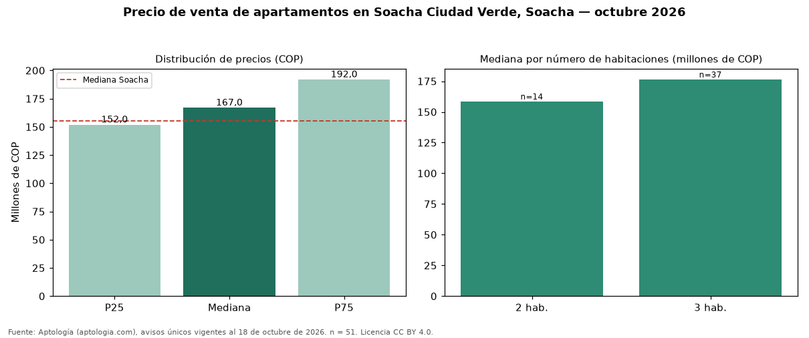

Precio de venta de apartamentos en Soacha Ciudad Verde, Soacha — octubre 2026
COP 167 millones es el precio mediano de apartamentos en venta en Soacha Ciudad Verde, Soacha (n = 51 avisos únicos). Eso la ubica 8 % por encima de la mediana de Soacha para apartamentos (COP 155 millones). Por metro cuadrado, la mediana es COP 3.434.783/m² (+10 % frente a COP 3.122.024/m² en Soacha). El segmento con más oferta es el de 3 habitaciones (37 avisos, mediana COP 176 millones); pasar de 2 habitaciones a 3 habitaciones sube la mediana 11 %. 2 % de los avisos incluye al menos un parqueadero. El estrato más frecuente en los avisos es 3. La antigüedad mediana declarada es de 12 años. Datos abiertos CC BY 4.0 de Aptología; fuente y búsqueda de inmuebles: https://www.aptologia.com/venta/soacha/soacha-ciudad-verde. Archivos: PDF de 2 páginas, CSV con las cifras y gráfica PNG.

| Avisos únicos | 51 |
|---|---|
| Percentil 25 | COP 152.000.000 |
| Mediana | COP 167.000.000 |
| Percentil 75 | COP 192.000.000 |
| Mediana por m² | COP 3.434.782 |
Fuente: avisos vigentes de portales inmobiliarios recopilados por Aptología, deduplicados (mínimo 30 avisos únicos por celda). Precios pedidos, no cerrados. Fecha: 2026-10-18.